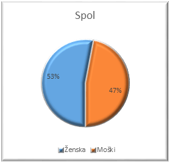
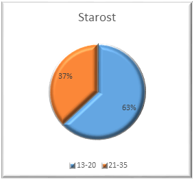
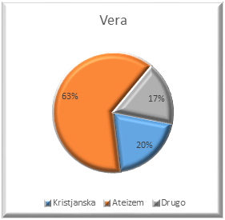
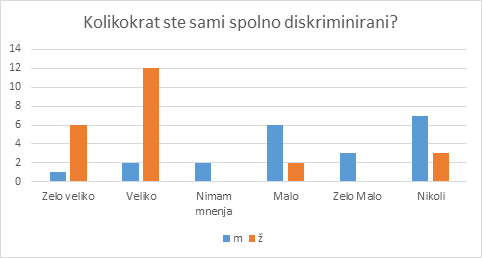
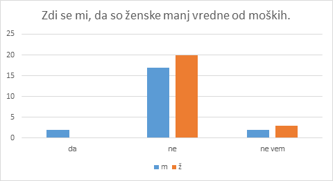
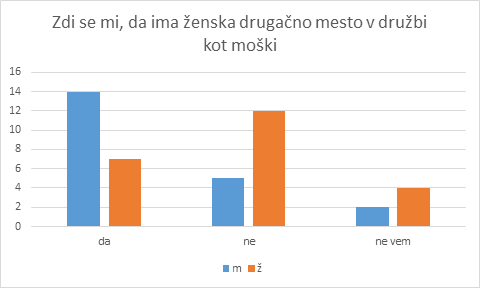
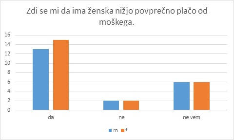
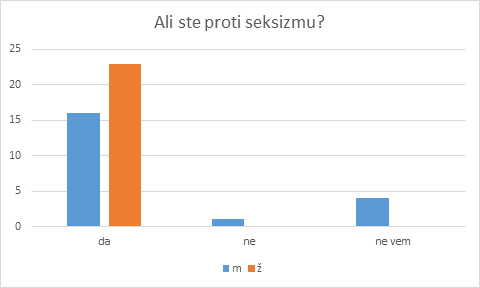
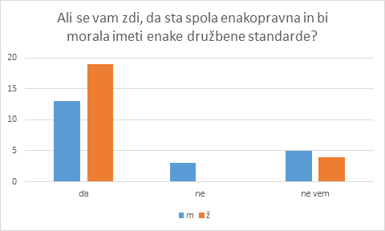

Udeleženih je bilo 44 anketirancev.Statistika podatkov:
     Pokaži več
Iz ankete lahko razberemo, da seksizma skorajda ni več v mladini današnje družbe. Ljudem se ne zdi, da so ženske slabše od moških in skoraj vsi so trdili, da so proti seksizmu. Izstopalo pa je še to, da je kar 48% anketirancev odgovorilo, da menijo da ima ženska drugačno vlogo v družbi kot moški. To morda še kaže neko ponotranjenje družbenih vlog spolov v ljudeh, ampak razen tega so vsa vprašanja kazala na to, da v družbi seksizma v večini ni.
Pokaži več